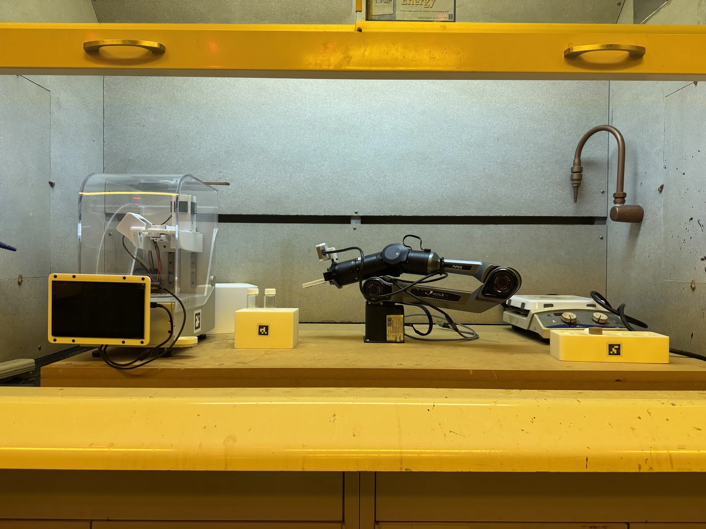

3D graphics are unavailable here. You can still edit and export the layout using the controls.
Drag a model to place it · Drag empty space to orbit · Scroll to zoom

3D graphics are unavailable here. You can still edit and export the layout using the controls.